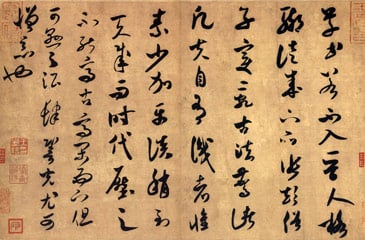
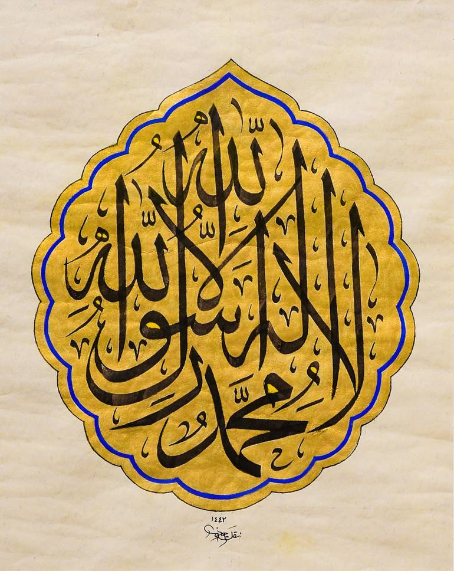
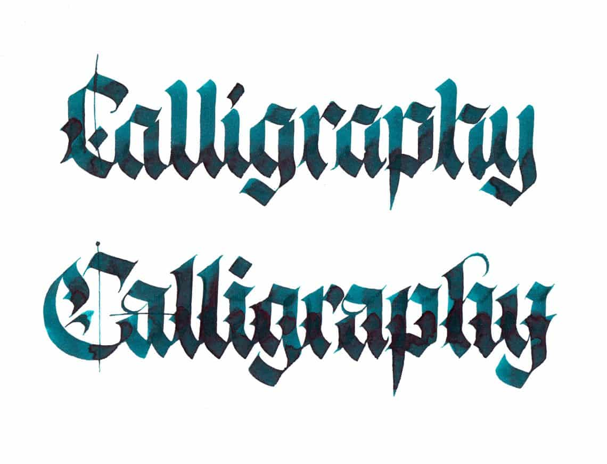

traditions
East Asian Calligraphy
Calligraphy is considered an important art in East Asia and as the most refined form of East Asian painting.
It has influenced most major art styles, including 'sumi-e', a style of Chinese and Japanese ink and wash
painting which uses similar tools and techniques and is based entirely on calligraphy.
East Asian calligraphy typically uses ink brushes to write Chinese characters which are called by various
names: 'Hanzi' in Chinese, 'Kanji' in Japanese, and 'Hanja' in Korean and Hán Tự in Vietnamese. The term
calligraphy: in Chinese, Shufa, in Japanese Shodō, in Korean, Seoye, all mean 'the way of writing'.

Indian Calligraphy
Persian and Arabic script is thought to have influenced Indian calligraphy, although the scripts used are
somewhat different. The flowing Persian script was thought to have influenced the writing style of Indian epics.
Calligraphy in India was especially influenced by Sikhism whose holy book has been traditionally handwritten and
illuminated. In ancient times the lack of modern printing technology resulted in a rich heritage of calligraphy
in many Indian languages.
Persian Calligraphy
The history of calligraphy in Persia dates back to the pre-Islam era. In Zoroastrianism, beautiful and clear
writings were highly valued. The three main forms of Persian calligraphy are called: Nasta'liq script,
Shekasteh-Nastaliq script and Naghashi-khat script. “Nasta'liq'' is the most popular contemporary style among
classical Persian calligraphy scripts and Persian calligraphers call it the “Bride of the Calligraphy Scripts.”
This calligraphy style has been based on rigid structure that has changed very little over the years.
It is believed that ancient Persian script was invented by about 500-600 B.C.E. to provide monument inscriptions
for the Achaemenid kings. These scripts consisted of horizontal, vertical, and diagonal nail-shape letters—the
reason it is called “Script of Nails” (Khat-e-Mikhi) in Farsi. After the rise of Islam in the seventh century,
Persians adapted the Arabic alphabet to Farsi language and developed the contemporary Farsi alphabet.
Islamic Calligraphy
Islamic calligraphy is an aspect of Islamic art that has evolved alongside the religion of Islam and the Arabic
language.
Arabic and Persian calligraphy are both associated with geometric Islamic art (known as arabesque) which is
found on the walls and ceilings of mosques as well as on paper. Contemporary artists in the Islamic world draw
on their calligraphic heritage by using inscriptions or abstractions in their work.
Calligraphy has arguably become the most venerated form of Islamic art because it provides a link between the
languages of the Muslims with the religion of Islam. The holy book of Islam, al-Qur'an has played an important
role in the development and evolution of the Arabic language, and by extension, calligraphy in the Arabic
alphabet. Proverbs and complete passages from the Qur'an are still sources for Islamic calligraphy.
Islamic Calligraphy has been an art form especially valued by Muslims who traditionally believed that only Allah
could create images of people and animals and that figures of such should not be represented in artwork.

Western Calligraphy
Western calligraphy is the calligraphy of the Latin writing system, and to a lesser degree the Greek and
Cyrillic writing systems. During the Middle Ages, hundreds of thousands of manuscripts were produced: many were
illuminated with gold and fine painting.
Christian churches promoted the development of writing through the prolific copying of the Bible, particularly
the New Testament and other sacred texts. Monks in the British Isles adapted the late Roman bookhand, 'Uncial',
to develop a unique bookhand called "Celtic" or "Insular," meaning "of the islands." The seventh to ninth
centuries in northern Europe were the peak time for Celtic illuminated manuscripts, exemplified by the
'Lindisfarne Gospels' and the 'Book of Kells'.
Charlemagne helped the spread of beautiful writing by bringing Alcuin, the Abbot of York, to his capital of
Aachen. Alcuin undertook a major revision of all styles of script and all texts, developing a new bookhand named
after his patron Charlemagne.
Those in Italy and Spain preferred the rounder but still heavy-looking Rotunda. During the fifteenth century,
Italian scribes returned to the Roman and Carolingian models of writing and designed the Italic hand, also
called Chancery cursive, and Roman bookhand. These three hands—Gothic, Italic, and Roman bookhand—became the
models for printed letters. Johannes Gutenberg used Gothic to print his famous Bible, but the lighter-weight
Italic and Roman bookhand have since become the standard.
